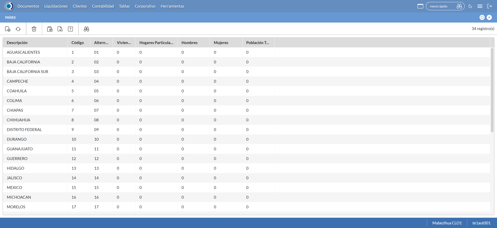
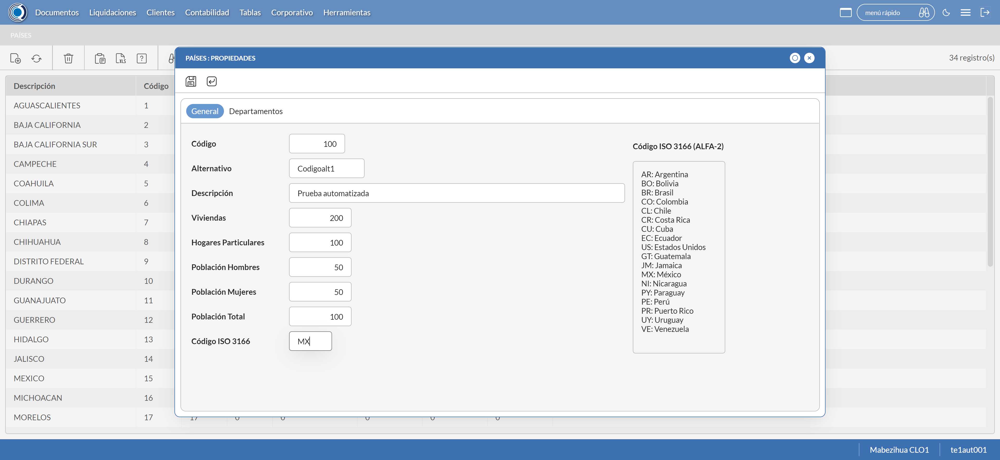
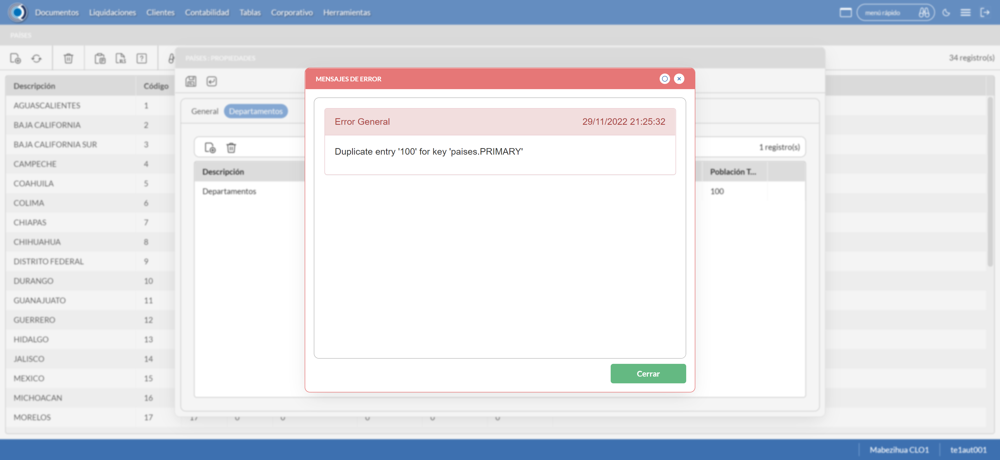

Desarrollado por : Area de Testing PWST
Fecha y hora de inicio : 2022-11-29 15:22:03
Duracion : 0:03:39.226745
Resultado : Total 8，Correctos 4 ，Errores 4 ，Taza de resultado 50.00%
Resumen 50.00% Errores 4 Fallidos 0 Correctos 4 Test realizados 8
| Caso de Prueba | Total | Correctos | Fallido | Error | Detalles | Captura del error |
| UbicacionesGeograficas.Test: Escenario 1 de Ubicaciones Geograficas | 8 | 4 | 0 | 4 | Detalles | |
test |
pt1_1: 2022-11-29 15:22:12,646 - root - INFO - Se abre el chrome
2022-11-29 15:22:13,844 - root - INFO - Entra a la URL
2022-11-29 15:22:18,094 - root - INFO - Maximiza la pantalla
2022-11-29 15:22:21,146 - root - INFO - Cambia al frame
|
|
||||
test_000: Ingresa a la base de datos |
pt1_2: 2022-11-29 15:22:24,293 - root - INFO - Escribe el usuario
2022-11-29 15:22:24,383 - root - INFO - Escribe la contraseña
2022-11-29 15:22:24,493 - root - INFO - Se dio clic en el boton ingresar
2022-11-29 15:22:29,038 - root - INFO - Ejecutar Enterprise
2022-11-29 15:22:33,076 - root - INFO - Cambia entre pestañas
|
|
||||
test_001: Abre menu y ejecuta pantalla |
pt1_3: 2022-11-29 15:22:49,149 - root - INFO - Abre la pantalla de Paises
2022-11-29 15:22:49,229 - root - INFO - La pantalla ejecutada es Paises.
2022-11-29 15:22:49,229 - root - INFO - Captura: C:\xampp\htdocs\Versiones\automatizaciones\AutoPWST\01UG\report\img screen：20221129_15_22_49.png
2022-11-29 15:22:53,248 - root - INFO - Se presiona el boton 'Nuevo', para crear un nuevo registro.
|
 | ||||
test_002: Abre la ventana de nuevo y crear un registro |
pt1_4: 2022-11-29 15:22:56,309 - root - INFO - Se abrio la pantalla para el ingreso de un registro nuevo.
2022-11-29 15:22:56,349 - root - INFO - El campo 'Codigo' si se encuentra visible.
2022-11-29 15:22:56,389 - root - INFO - El campo 'Alternativo' si se encuentra visible.
2022-11-29 15:22:56,429 - root - INFO - El campo 'Descrición' si se encuentra visible.
2022-11-29 15:22:56,469 - root - INFO - El campo 'Viviendas' si se encuentra visible.
2022-11-29 15:22:56,509 - root - INFO - El campo 'Hogares Particulares' si se encuentra visible.
2022-11-29 15:22:56,549 - root - INFO - El campo 'Población Hombres' si se encuentra visible.
2022-11-29 15:22:56,589 - root - INFO - El campo 'Población Mujeres' si se encuentra visible.
2022-11-29 15:22:56,629 - root - INFO - El campo 'Población Total' si se encuentra visible.
2022-11-29 15:22:56,659 - root - INFO - El campo 'Código ISO 3166' si se encuentra visible.
2022-11-29 15:22:56,719 - root - INFO - Ingresa el codigo del nuevo registro
2022-11-29 15:22:57,859 - root - INFO - Ingresa el codigo alternativo del nuevo registro
2022-11-29 15:22:58,999 - root - INFO - Ingresa la descripción del nuevo registro
2022-11-29 15:23:00,129 - root - INFO - Ingresa el número de viviendas del nuevo registro
2022-11-29 15:23:01,279 - root - INFO - Ingresa el número de hogares particulares del nuevo registro
2022-11-29 15:23:02,406 - root - INFO - Ingresa el número de Población de hombres del nuevo registro
2022-11-29 15:23:03,526 - root - INFO - Ingresa el número de Población de mujeres del nuevo registro
2022-11-29 15:23:04,695 - root - INFO - Ingresa el número de Población Total del nuevo registro
2022-11-29 15:23:05,816 - root - INFO - Ingresa el Codigo ISO del nuevo registro
2022-11-29 15:23:06,824 - root - INFO - Captura: C:\xampp\htdocs\Versiones\automatizaciones\AutoPWST\01UG\report\img screen：20221129_15_23_06.png
2022-11-29 15:23:20,094 - root - INFO - Se hace el cambio de pestaña para continuar con el registro nuevo
2022-11-29 15:23:25,765 - root - INFO - Se presiona el boton 'Nuevo', para crear un nuevo registro.
2022-11-29 15:23:26,327 - root - INFO - El campo 'Codigo' si se encuentra visible.
2022-11-29 15:23:26,366 - root - INFO - El campo 'Alternativo' si se encuentra visible.
2022-11-29 15:23:26,394 - root - INFO - El campo 'Descrición' si se encuentra visible.
2022-11-29 15:23:26,434 - root - INFO - El campo 'Impuesto' si se encuentra visible.
2022-11-29 15:23:26,484 - root - INFO - El campo 'Viviendas' si se encuentra visible.
2022-11-29 15:23:26,524 - root - INFO - El campo 'Hogares Particulares' si se encuentra visible.
2022-11-29 15:23:26,554 - root - INFO - El campo 'Población Hombres' si se encuentra visible.
2022-11-29 15:23:26,594 - root - INFO - El campo 'Población Mujeres' si se encuentra visible.
2022-11-29 15:23:26,634 - root - INFO - El campo 'Población Total' si se encuentra visible.
2022-11-29 15:23:26,694 - root - INFO - Ingresa el codigo del nuevo registro
2022-11-29 15:23:27,854 - root - INFO - Ingresa el codigo alternativo del nuevo registro
2022-11-29 15:23:28,991 - root - INFO - Ingresa la descripción del nuevo registro
2022-11-29 15:23:42,713 - root - INFO - Ingresa el número de viviendas del nuevo registro
2022-11-29 15:23:43,871 - root - INFO - Ingresa el número de hogares particulares del nuevo registro
2022-11-29 15:23:45,011 - root - INFO - Ingresa el número de Población de hombres del nuevo registro
2022-11-29 15:23:46,151 - root - INFO - Ingresa el número de Población de mujeres del nuevo registro
2022-11-29 15:23:47,304 - root - INFO - Ingresa el número de Población Total del nuevo registro
2022-11-29 15:23:48,458 - root - INFO - Se hace el cambio de pestaña para continuar con el registro nuevo
2022-11-29 15:23:49,580 - root - INFO - Se presiona el boton 'Nuevo', para crear un nuevo registro.
2022-11-29 15:23:50,182 - root - INFO - El campo 'Localidad' si se encuentra visible.
2022-11-29 15:23:50,223 - root - INFO - El campo 'Alternativo' si se encuentra visible.
2022-11-29 15:23:50,263 - root - INFO - El campo 'Descrición' si se encuentra visible.
2022-11-29 15:23:50,293 - root - INFO - El campo 'Viviendas' si se encuentra visible.
2022-11-29 15:23:50,333 - root - INFO - El campo 'Hogares Particulares' si se encuentra visible.
2022-11-29 15:23:50,373 - root - INFO - El campo 'Población Hombres' si se encuentra visible.
2022-11-29 15:23:50,413 - root - INFO - El campo 'Población Mujeres' si se encuentra visible.
2022-11-29 15:23:50,453 - root - INFO - El campo 'Población Total' si se encuentra visible.
2022-11-29 15:23:50,513 - root - INFO - Ingresa el codigo del nuevo registro
2022-11-29 15:23:51,681 - root - INFO - Ingresa el codigo alternativo del nuevo registro
2022-11-29 15:23:52,841 - root - INFO - Ingresa la descripción del nuevo registro
2022-11-29 15:23:53,981 - root - INFO - Ingresa el número de viviendas del nuevo registro
2022-11-29 15:23:55,167 - root - INFO - Ingresa el número de hogares particulares del nuevo registro
2022-11-29 15:23:56,315 - root - INFO - Ingresa el número de Población de hombres del nuevo registro
2022-11-29 15:23:57,465 - root - INFO - Ingresa el número de Población de mujeres del nuevo registro
2022-11-29 15:23:58,594 - root - INFO - Ingresa el número de Población Total del nuevo registro
2022-11-29 15:23:59,684 - root - INFO - Se hace el cambio de pestaña para continuar con el registro nuevo
2022-11-29 15:24:06,281 - root - INFO - Se presiona el boton 'Nuevo', para crear un nuevo registro.
2022-11-29 15:24:06,900 - root - INFO - El campo 'Código' si se encuentra visible.
2022-11-29 15:24:06,961 - root - INFO - El campo 'Alternativo' si se encuentra visible.
2022-11-29 15:24:07,031 - root - INFO - El campo 'Descrición' si se encuentra visible.
2022-11-29 15:24:07,081 - root - INFO - El campo 'Viviendas' si se encuentra visible.
2022-11-29 15:24:07,121 - root - INFO - El campo 'Hogares Particulares' si se encuentra visible.
2022-11-29 15:24:07,188 - root - INFO - El campo 'Población Hombres' si se encuentra visible.
2022-11-29 15:24:07,248 - root - INFO - El campo 'Población Mujeres' si se encuentra visible.
2022-11-29 15:24:07,288 - root - INFO - El campo 'Población Total' si se encuentra visible.
2022-11-29 15:24:07,364 - root - INFO - Ingresa el codigo del nuevo registro
2022-11-29 15:24:08,506 - root - INFO - Ingresa el codigo alternativo del nuevo registro
2022-11-29 15:24:09,686 - root - INFO - Ingresa la descripción del nuevo registro
2022-11-29 15:24:10,776 - root - INFO - Ingresa el número de viviendas del nuevo registro
2022-11-29 15:24:11,913 - root - INFO - Ingresa el número de hogares particulares del nuevo registro
2022-11-29 15:24:13,071 - root - INFO - Ingresa el número de Población de hombres del nuevo registro
2022-11-29 15:24:14,207 - root - INFO - Ingresa el número de Población de mujeres del nuevo registro
2022-11-29 15:24:15,366 - root - INFO - Ingresa el número de Población Total del nuevo registro
2022-11-29 15:24:16,493 - root - INFO - Se da clic en el boton Guardar; se debe crear un nuevo registro.
2022-11-29 15:24:21,610 - root - INFO - Se da clic en el boton Guardar; se debe crear un nuevo registro.
2022-11-29 15:24:26,751 - root - INFO - Se hace el cambio de pestaña para continuar con el registro nuevo
2022-11-29 15:24:29,885 - root - INFO - Se presiona el boton 'Nuevo', para crear un nuevo registro.
2022-11-29 15:24:30,450 - root - INFO - El campo 'Artículo' si se encuentra visible.
2022-11-29 15:24:30,485 - root - INFO - El campo 'Impuesto' si se encuentra visible.
2022-11-29 15:25:21,241 - root - INFO - Se da clic en el boton Guardar; se debe crear un nuevo registro.
2022-11-29 15:25:26,371 - root - INFO - Se da clic en el boton Guardar; se debe crear un nuevo registro.
2022-11-29 15:25:31,514 - root - INFO - Se da clic en el boton Guardar; se debe crear un nuevo registro.
|
 | ||||
test_003: Repetir el registro creado anteriormente |
ft1_5: 2022-11-29 15:25:37,632 - root - ERROR - No se dió click al botón Refrescar, validar que la acción anterior haya finalizado,que el xpath sea el correcto o que la página no presente lentitud
2022-11-29 15:25:37,632 - root - INFO - Captura: C:\xampp\htdocs\Versiones\automatizaciones\AutoPWST\01UG\report\img screen：20221129_15_25_37.png
Traceback (most recent call last):
File "C:\xampp\htdocs\Versiones\automatizaciones\AutoPWST\01UG\testCase\UbicacionesGeograficas.py", line 50, in test_003
return repetirregistro.repetirregistro(self)
^^^^^^^^^^^^^^^^^^^^^^^^^^^^^^^^^^^^^
File "C:\xampp\htdocs\Versiones\automatizaciones\AutoPWST\01UG\testCase\repetirregistro.py", line 23, in repetirregistro
Refresca.click()
File "C:\Users\PWST\AppData\Local\Programs\Python\Python311\Lib\site-packages\selenium\webdriver\remote\webelement.py", line 88, in click
self._execute(Command.CLICK_ELEMENT)
File "C:\Users\PWST\AppData\Local\Programs\Python\Python311\Lib\site-packages\selenium\webdriver\remote\webelement.py", line 396, in _execute
return self._parent.execute(command, params)
^^^^^^^^^^^^^^^^^^^^^^^^^^^^^^^^^^^^^
File "C:\Users\PWST\AppData\Local\Programs\Python\Python311\Lib\site-packages\selenium\webdriver\remote\webdriver.py", line 429, in execute
self.error_handler.check_response(response)
File "C:\Users\PWST\AppData\Local\Programs\Python\Python311\Lib\site-packages\selenium\webdriver\remote\errorhandler.py", line 243, in check_response
raise exception_class(message, screen, stacktrace)
selenium.common.exceptions.ElementClickInterceptedException: Message: element click intercepted: Element <div tabindex="12" id="_634525B6E1DF454C8B71D285EA3EA532__refresh_element" name="_634525B6E1DF454C8B71D285EA3EA532__refresh_element">...</div> is not clickable at point (56, 88). Other element would receive the click: <div class="ui-modal-container">...</div>
(Session info: chrome=107.0.5304.122)
Stacktrace:
Backtrace:
Ordinal0 [0x00F0ACD3+2075859]
Ordinal0 [0x00E9EE61+1633889]
Ordinal0 [0x00D9B7BD+571325]
Ordinal0 [0x00DD1499+791705]
Ordinal0 [0x00DCF4AC+783532]
Ordinal0 [0x00DCD0AB+774315]
Ordinal0 [0x00DCBD37+769335]
Ordinal0 [0x00DC1C76+728182]
Ordinal0 [0x00DE731C+881436]
Ordinal0 [0x00DC15BF+726463]
Ordinal0 [0x00DE7534+881972]
Ordinal0 [0x00DFB56A+963946]
Ordinal0 [0x00DE7136+880950]
Ordinal0 [0x00DBFEFD+720637]
Ordinal0 [0x00DC0F3F+724799]
GetHandleVerifier [0x011BEED2+2769538]
GetHandleVerifier [0x011B0D95+2711877]
GetHandleVerifier [0x00F9A03A+521194]
GetHandleVerifier [0x00F98DA0+516432]
Ordinal0 [0x00EA682C+1665068]
Ordinal0 [0x00EAB128+1683752]
Ordinal0 [0x00EAB215+1683989]
Ordinal0 [0x00EB6484+1729668]
BaseThreadInitThunk [0x76A5FEF9+25]
RtlGetAppContainerNamedObjectPath [0x77377BBE+286]
RtlGetAppContainerNamedObjectPath [0x77377B8E+238]
|
 | ||||
test_004: Modificar el registro |
ft1_6: 2022-11-29 15:25:42,922 - root - ERROR - No se dió click al botón Refrescar, validar que la acción anterior haya finalizado,que el xpath sea el correcto o que la página no presente lentitud
2022-11-29 15:25:42,932 - root - INFO - Captura: C:\xampp\htdocs\Versiones\automatizaciones\AutoPWST\01UG\report\img screen：20221129_15_25_42.png
Traceback (most recent call last):
File "C:\xampp\htdocs\Versiones\automatizaciones\AutoPWST\01UG\testCase\modificarregistro.py", line 22, in modificarregistro
Refresca2 = self.wait.until(conditions.visibility((By.XPATH, Configuracion.btn_Refresca)))
^^^^^^^^^^^^^^^^^^^^^^^^^^^^^^^^^^^^^^^^^^^^^^^^^^^^^^^^^^^^^^^^^^^^^^^^^^^^^^
File "C:\Users\PWST\AppData\Local\Programs\Python\Python311\Lib\site-packages\selenium\webdriver\support\wait.py", line 81, in until
value = method(self._driver)
^^^^^^^^^^^^^^^^^^^^
File "C:\Users\PWST\AppData\Local\Programs\Python\Python311\Lib\site-packages\selenium\webdriver\support\expected_conditions.py", line 125, in _predicate
return _element_if_visible(driver.find_element(*locator))
^^^^^^^^^^^^^^^^^^^^^^^^^^^^^
File "C:\Users\PWST\AppData\Local\Programs\Python\Python311\Lib\site-packages\selenium\webdriver\remote\webdriver.py", line 856, in find_element
return self.execute(Command.FIND_ELEMENT, {
^^^^^^^^^^^^^^^^^^^^^^^^^^^^^^^^^^^^
File "C:\Users\PWST\AppData\Local\Programs\Python\Python311\Lib\site-packages\selenium\webdriver\remote\webdriver.py", line 429, in execute
self.error_handler.check_response(response)
File "C:\Users\PWST\AppData\Local\Programs\Python\Python311\Lib\site-packages\selenium\webdriver\remote\errorhandler.py", line 243, in check_response
raise exception_class(message, screen, stacktrace)
selenium.common.exceptions.InvalidSessionIdException: Message: invalid session id
Stacktrace:
Backtrace:
Ordinal0 [0x00F0ACD3+2075859]
Ordinal0 [0x00E9EE61+1633889]
Ordinal0 [0x00D9B680+571008]
Ordinal0 [0x00DBFBAD+719789]
Ordinal0 [0x00DC0F3F+724799]
GetHandleVerifier [0x011BEED2+2769538]
GetHandleVerifier [0x011B0D95+2711877]
GetHandleVerifier [0x00F9A03A+521194]
GetHandleVerifier [0x00F98DA0+516432]
Ordinal0 [0x00EA682C+1665068]
Ordinal0 [0x00EAB128+1683752]
Ordinal0 [0x00EAB215+1683989]
Ordinal0 [0x00EB6484+1729668]
BaseThreadInitThunk [0x76A5FEF9+25]
RtlGetAppContainerNamedObjectPath [0x77377BBE+286]
RtlGetAppContainerNamedObjectPath [0x77377B8E+238]
During handling of the above exception, another exception occurred:
Traceback (most recent call last):
File "C:\xampp\htdocs\Versiones\automatizaciones\AutoPWST\01UG\testCase\UbicacionesGeograficas.py", line 54, in test_004
return modificarregistro.modificarregistro(self)
^^^^^^^^^^^^^^^^^^^^^^^^^^^^^^^^^^^^^^^^^
File "C:\xampp\htdocs\Versiones\automatizaciones\AutoPWST\01UG\testCase\modificarregistro.py", line 33, in modificarregistro
self.driver.get_screenshot_as_file(img_name)
File "C:\Users\PWST\AppData\Local\Programs\Python\Python311\Lib\site-packages\selenium\webdriver\remote\webdriver.py", line 927, in get_screenshot_as_file
png = self.get_screenshot_as_png()
^^^^^^^^^^^^^^^^^^^^^^^^^^^^
File "C:\Users\PWST\AppData\Local\Programs\Python\Python311\Lib\site-packages\selenium\webdriver\remote\webdriver.py", line 963, in get_screenshot_as_png
return b64decode(self.get_screenshot_as_base64().encode('ascii'))
^^^^^^^^^^^^^^^^^^^^^^^^^^^^^^^
File "C:\Users\PWST\AppData\Local\Programs\Python\Python311\Lib\site-packages\selenium\webdriver\remote\webdriver.py", line 975, in get_screenshot_as_base64
return self.execute(Command.SCREENSHOT)['value']
^^^^^^^^^^^^^^^^^^^^^^^^^^^^^^^^
File "C:\Users\PWST\AppData\Local\Programs\Python\Python311\Lib\site-packages\selenium\webdriver\remote\webdriver.py", line 429, in execute
self.error_handler.check_response(response)
File "C:\Users\PWST\AppData\Local\Programs\Python\Python311\Lib\site-packages\selenium\webdriver\remote\errorhandler.py", line 243, in check_response
raise exception_class(message, screen, stacktrace)
selenium.common.exceptions.InvalidSessionIdException: Message: invalid session id
Stacktrace:
Backtrace:
Ordinal0 [0x00F0ACD3+2075859]
Ordinal0 [0x00E9EE61+1633889]
Ordinal0 [0x00D9B680+571008]
Ordinal0 [0x00DBF924+719140]
Ordinal0 [0x00DE7210+881168]
Ordinal0 [0x00DE3FAF+868271]
Ordinal0 [0x00DE3AF8+867064]
Ordinal0 [0x00D7A257+434775]
Ordinal0 [0x00D7A8F3+436467]
Ordinal0 [0x00D7AD2A+437546]
GetHandleVerifier [0x011BEED2+2769538]
GetHandleVerifier [0x011B0D95+2711877]
GetHandleVerifier [0x00F9A03A+521194]
GetHandleVerifier [0x00F98DA0+516432]
Ordinal0 [0x00EA682C+1665068]
Ordinal0 [0x00D7A0C7+434375]
Ordinal0 [0x00D79AD2+432850]
GetHandleVerifier [0x011DD12C+2893020]
BaseThreadInitThunk [0x76A5FEF9+25]
RtlGetAppContainerNamedObjectPath [0x77377BBE+286]
RtlGetAppContainerNamedObjectPath [0x77377B8E+238]
|

|
||||
test_005: Eliminar el registro creado |
ft1_7: 2022-11-29 15:25:42,972 - root - ERROR - No se dió click al botón Refrescar, validar que la acción anterior haya finalizado,que el xpath sea el correcto o que la página no presente lentitud
2022-11-29 15:25:42,982 - root - INFO - Captura: C:\xampp\htdocs\Versiones\automatizaciones\AutoPWST\01UG\report\img screen：20221129_15_25_42.png
Traceback (most recent call last):
File "C:\xampp\htdocs\Versiones\automatizaciones\AutoPWST\01UG\testCase\eliminarregistro.py", line 21, in eliminarregistro
Refresca3 = self.wait.until(conditions.visibility((By.XPATH, Configuracion.btn_Refresca)))
^^^^^^^^^^^^^^^^^^^^^^^^^^^^^^^^^^^^^^^^^^^^^^^^^^^^^^^^^^^^^^^^^^^^^^^^^^^^^^
File "C:\Users\PWST\AppData\Local\Programs\Python\Python311\Lib\site-packages\selenium\webdriver\support\wait.py", line 81, in until
value = method(self._driver)
^^^^^^^^^^^^^^^^^^^^
File "C:\Users\PWST\AppData\Local\Programs\Python\Python311\Lib\site-packages\selenium\webdriver\support\expected_conditions.py", line 125, in _predicate
return _element_if_visible(driver.find_element(*locator))
^^^^^^^^^^^^^^^^^^^^^^^^^^^^^
File "C:\Users\PWST\AppData\Local\Programs\Python\Python311\Lib\site-packages\selenium\webdriver\remote\webdriver.py", line 856, in find_element
return self.execute(Command.FIND_ELEMENT, {
^^^^^^^^^^^^^^^^^^^^^^^^^^^^^^^^^^^^
File "C:\Users\PWST\AppData\Local\Programs\Python\Python311\Lib\site-packages\selenium\webdriver\remote\webdriver.py", line 429, in execute
self.error_handler.check_response(response)
File "C:\Users\PWST\AppData\Local\Programs\Python\Python311\Lib\site-packages\selenium\webdriver\remote\errorhandler.py", line 243, in check_response
raise exception_class(message, screen, stacktrace)
selenium.common.exceptions.InvalidSessionIdException: Message: invalid session id
Stacktrace:
Backtrace:
Ordinal0 [0x00F0ACD3+2075859]
Ordinal0 [0x00E9EE61+1633889]
Ordinal0 [0x00D9B680+571008]
Ordinal0 [0x00DBF924+719140]
Ordinal0 [0x00DE7210+881168]
Ordinal0 [0x00DE3FAF+868271]
Ordinal0 [0x00DE3AF8+867064]
Ordinal0 [0x00D7A257+434775]
Ordinal0 [0x00D7A8F3+436467]
Ordinal0 [0x00D7AD2A+437546]
GetHandleVerifier [0x011BEED2+2769538]
GetHandleVerifier [0x011B0D95+2711877]
GetHandleVerifier [0x00F9A03A+521194]
GetHandleVerifier [0x00F98DA0+516432]
Ordinal0 [0x00EA682C+1665068]
Ordinal0 [0x00D7A0C7+434375]
Ordinal0 [0x00D79AD2+432850]
GetHandleVerifier [0x011DD12C+2893020]
BaseThreadInitThunk [0x76A5FEF9+25]
RtlGetAppContainerNamedObjectPath [0x77377BBE+286]
RtlGetAppContainerNamedObjectPath [0x77377B8E+238]
During handling of the above exception, another exception occurred:
Traceback (most recent call last):
File "C:\xampp\htdocs\Versiones\automatizaciones\AutoPWST\01UG\testCase\UbicacionesGeograficas.py", line 58, in test_005
return eliminarregistro.eliminarregistro(self)
^^^^^^^^^^^^^^^^^^^^^^^^^^^^^^^^^^^^^^^
File "C:\xampp\htdocs\Versiones\automatizaciones\AutoPWST\01UG\testCase\eliminarregistro.py", line 31, in eliminarregistro
self.driver.get_screenshot_as_file(img_name)
File "C:\Users\PWST\AppData\Local\Programs\Python\Python311\Lib\site-packages\selenium\webdriver\remote\webdriver.py", line 927, in get_screenshot_as_file
png = self.get_screenshot_as_png()
^^^^^^^^^^^^^^^^^^^^^^^^^^^^
File "C:\Users\PWST\AppData\Local\Programs\Python\Python311\Lib\site-packages\selenium\webdriver\remote\webdriver.py", line 963, in get_screenshot_as_png
return b64decode(self.get_screenshot_as_base64().encode('ascii'))
^^^^^^^^^^^^^^^^^^^^^^^^^^^^^^^
File "C:\Users\PWST\AppData\Local\Programs\Python\Python311\Lib\site-packages\selenium\webdriver\remote\webdriver.py", line 975, in get_screenshot_as_base64
return self.execute(Command.SCREENSHOT)['value']
^^^^^^^^^^^^^^^^^^^^^^^^^^^^^^^^
File "C:\Users\PWST\AppData\Local\Programs\Python\Python311\Lib\site-packages\selenium\webdriver\remote\webdriver.py", line 429, in execute
self.error_handler.check_response(response)
File "C:\Users\PWST\AppData\Local\Programs\Python\Python311\Lib\site-packages\selenium\webdriver\remote\errorhandler.py", line 243, in check_response
raise exception_class(message, screen, stacktrace)
selenium.common.exceptions.InvalidSessionIdException: Message: invalid session id
Stacktrace:
Backtrace:
Ordinal0 [0x00F0ACD3+2075859]
Ordinal0 [0x00E9EE61+1633889]
Ordinal0 [0x00D9B680+571008]
Ordinal0 [0x00DBF924+719140]
Ordinal0 [0x00DE7210+881168]
Ordinal0 [0x00DE3FAF+868271]
Ordinal0 [0x00DE3AF8+867064]
Ordinal0 [0x00D7A257+434775]
Ordinal0 [0x00D7A8F3+436467]
Ordinal0 [0x00D7AD2A+437546]
GetHandleVerifier [0x011BEED2+2769538]
GetHandleVerifier [0x011B0D95+2711877]
GetHandleVerifier [0x00F9A03A+521194]
GetHandleVerifier [0x00F98DA0+516432]
Ordinal0 [0x00EA682C+1665068]
Ordinal0 [0x00D7A0C7+434375]
Ordinal0 [0x00D79AD2+432850]
GetHandleVerifier [0x011DD12C+2893020]
BaseThreadInitThunk [0x76A5FEF9+25]
RtlGetAppContainerNamedObjectPath [0x77377BBE+286]
RtlGetAppContainerNamedObjectPath [0x77377B8E+238]
|
|
||||
test_006: Cerrar_Navegador |
ft1_8: Traceback (most recent call last):
File "C:\xampp\htdocs\Versiones\automatizaciones\AutoPWST\01UG\testCase\UbicacionesGeograficas.py", line 62, in test_006
self.driver.close()
File "C:\Users\PWST\AppData\Local\Programs\Python\Python311\Lib\site-packages\selenium\webdriver\remote\webdriver.py", line 551, in close
self.execute(Command.CLOSE)
File "C:\Users\PWST\AppData\Local\Programs\Python\Python311\Lib\site-packages\selenium\webdriver\remote\webdriver.py", line 429, in execute
self.error_handler.check_response(response)
File "C:\Users\PWST\AppData\Local\Programs\Python\Python311\Lib\site-packages\selenium\webdriver\remote\errorhandler.py", line 243, in check_response
raise exception_class(message, screen, stacktrace)
selenium.common.exceptions.InvalidSessionIdException: Message: invalid session id
Stacktrace:
Backtrace:
Ordinal0 [0x00F0ACD3+2075859]
Ordinal0 [0x00E9EE61+1633889]
Ordinal0 [0x00D9B680+571008]
Ordinal0 [0x00DBF924+719140]
Ordinal0 [0x00DE7210+881168]
Ordinal0 [0x00DE3FAF+868271]
Ordinal0 [0x00DE3AF8+867064]
Ordinal0 [0x00D7A257+434775]
Ordinal0 [0x00D7A8F3+436467]
Ordinal0 [0x00D7AD2A+437546]
GetHandleVerifier [0x011BEED2+2769538]
GetHandleVerifier [0x011B0D95+2711877]
GetHandleVerifier [0x00F9A03A+521194]
GetHandleVerifier [0x00F98DA0+516432]
Ordinal0 [0x00EA682C+1665068]
Ordinal0 [0x00D7A0C7+434375]
Ordinal0 [0x00D79AD2+432850]
GetHandleVerifier [0x011DD12C+2893020]
BaseThreadInitThunk [0x76A5FEF9+25]
RtlGetAppContainerNamedObjectPath [0x77377BBE+286]
RtlGetAppContainerNamedObjectPath [0x77377B8E+238]
|
|
||||
| Caso de prueba | 8 | 4 | 0 | 4 | Taza de resultado：50.00% | |